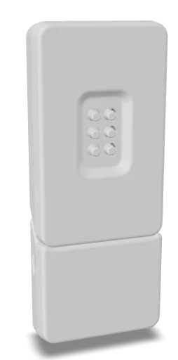
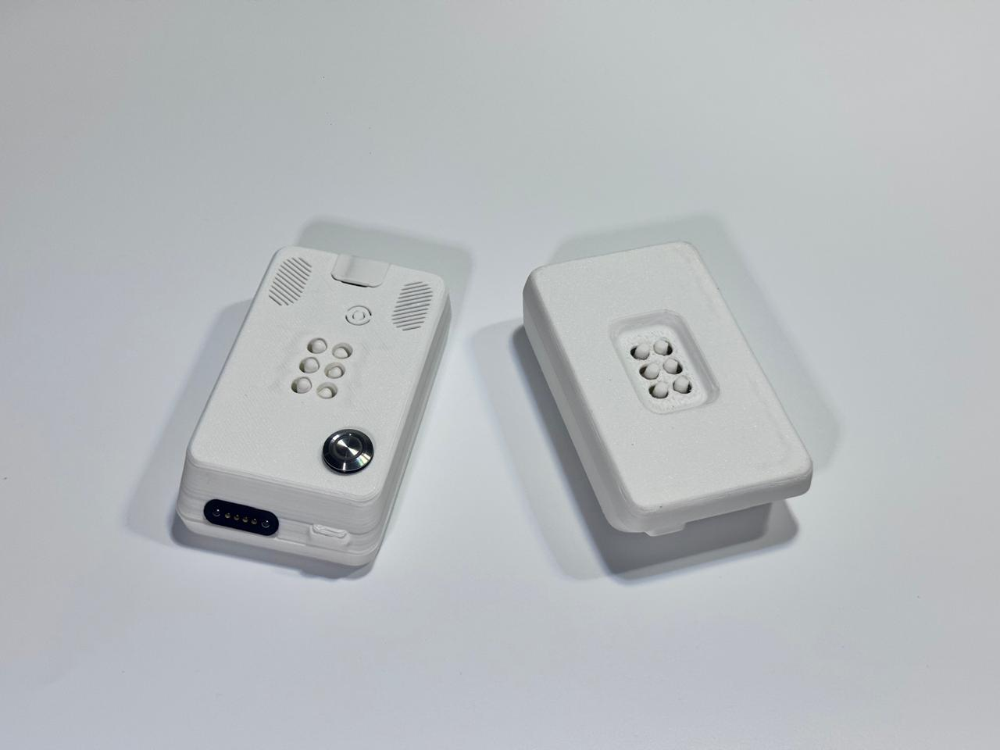
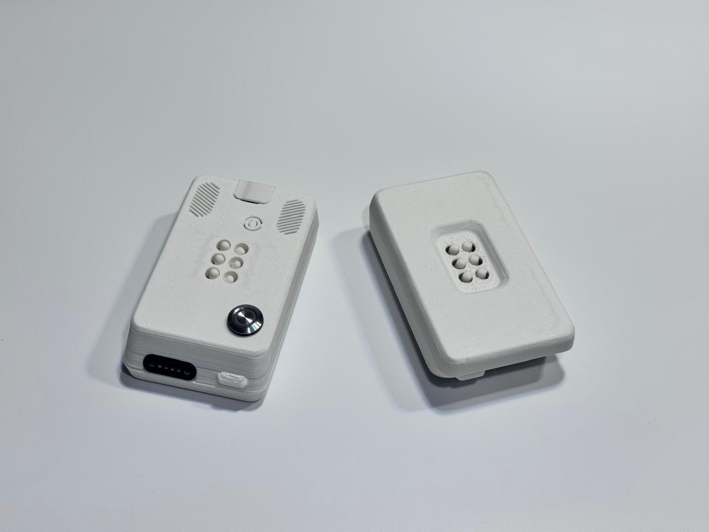
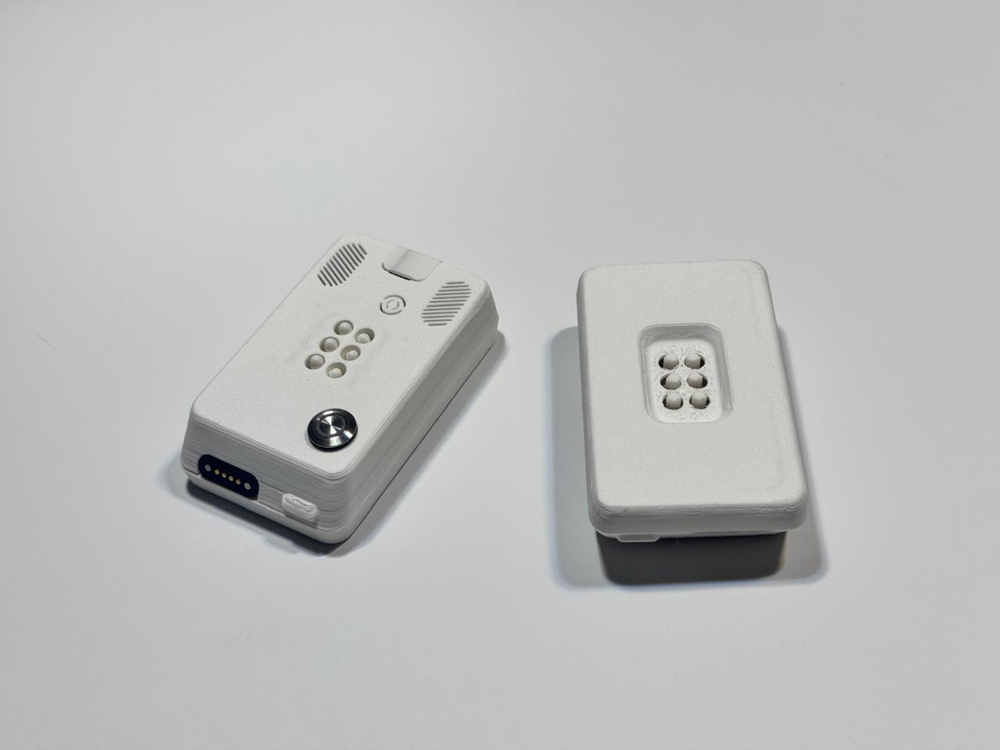
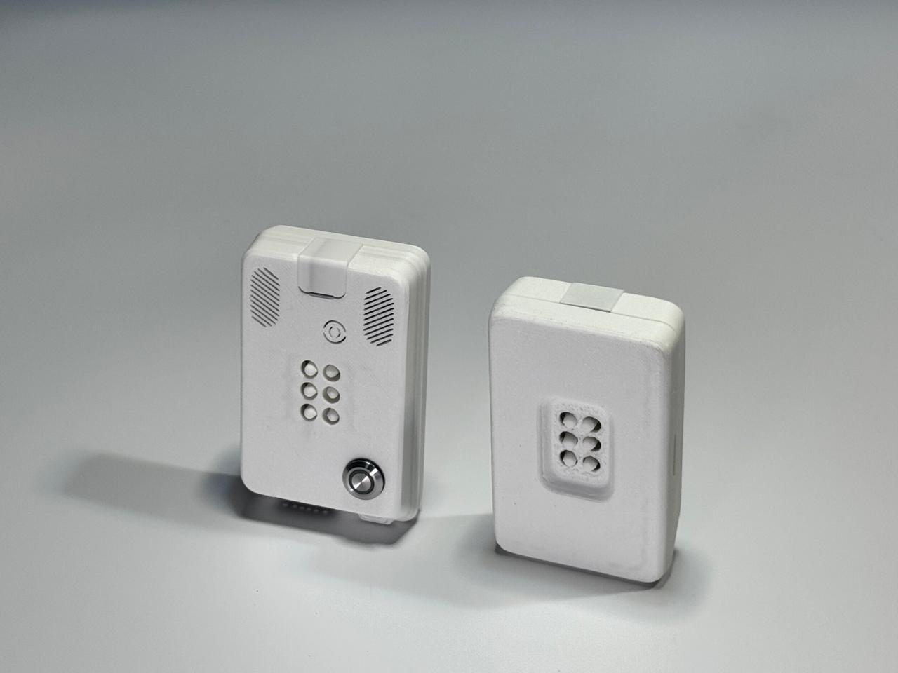

01 / El dispositivoThe device
Míralo por fuera.
Entiéndelo por dentro.Explore the outside.
Understand the inside.
Recorre el modelo y consulta sus componentes. También encontrarás la lista completa en texto, sin necesidad de usar el visor.Explore the model and its components. The full component list is also available as text, without using the viewer.

Arrastra para girar; usa la rueda para acercarte. Con teclado, enfoca el modelo y usa las flechas. Exterior: 9,4 MB · Interior: 11,7 MB.Drag to rotate; scroll to zoom. With a keyboard, focus the model and use the arrow keys. Exterior: 9.4 MB · Interior: 11.7 MB.
Tocar y reconocerTouch and recognise
La matriz de seis puntos permite explorar la representación táctil de los caracteres Braille.The six-dot matrix supports tactile exploration of Braille characters.
Escribir y comprobarWrite and check
La zona de escritura y el botón validador acompañan la interacción con retroalimentación sonora.The writing area and validation button support interaction through audio feedback.
Comprender y replicarUnderstand and replicate
La documentación conecta el diseño mecánico, la electrónica y los procesos de fabricación digital.The documentation connects mechanical design, electronics and digital fabrication processes.
El dispositivo en fotografíasThe device in photographs








El proyecto en acciónThe project in action
Conoce su funcionamiento.See how it works.
Video público de demostración del dispositivo.Public device demonstration video.
Ver demostración en YouTube ↗Watch demonstration on YouTube ↗